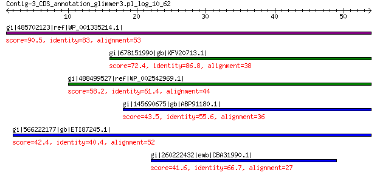

bitscore colors: <40, 40-50 , 50-80, 80-200, >200
 BLASTP 2.2.31+
Reference: Stephen F. Altschul, Thomas L. Madden, Alejandro A.
Schaffer, Jinghui Zhang, Zheng Zhang, Webb Miller, and David J.
Lipman (1997), "Gapped BLAST and PSI-BLAST: a new generation of
protein database search programs", Nucleic Acids Res. 25:3389-3402.
Reference for composition-based statistics: Alejandro A. Schaffer,
L. Aravind, Thomas L. Madden, Sergei Shavirin, John L. Spouge, Yuri
I. Wolf, Eugene V. Koonin, and Stephen F. Altschul (2001),
"Improving the accuracy of PSI-BLAST protein database searches with
composition-based statistics and other refinements", Nucleic Acids
Res. 29:2994-3005.
Database: All non-redundant GenBank CDS translations+PDB+SwissProt+PIR+PRF
excluding environmental samples from WGS projects
49,011,213 sequences; 17,563,301,199 total letters
Query= Contig-3_CDS_annotation_glimmer3.pl_log_10_62
Length=53
Score E
Sequences producing significant alignments: (Bits) Value
gi|485702123|ref|WP_001335214.1| hypothetical protein 90.5 2e-22
gi|678151990|gb|KFV20713.1| hypothetical protein GS40_24655 72.4 1e-14
gi|488499527|ref|WP_002542969.1| hypothetical protein 58.2 2e-09
gi|145690675|gb|ABP91180.1| unknown protein 43.5 0.001
gi|566222177|gb|ETI87245.1| hypothetical protein Q615_SPAC00010G... 42.4 0.003
gi|260222432|emb|CBA31990.1| hypothetical protein Csp_D29880 41.6 0.016
>gi|485702123|ref|WP_001335214.1| hypothetical protein [Escherichia coli]
gi|300308161|gb|EFJ62681.1| hypothetical protein HMPREF9553_01204 [Escherichia coli MS 200-1]
Length=53
Score = 90.5 bits (223), Expect = 2e-22, Method: Compositional matrix adjust.
Identities = 44/53 (83%), Positives = 46/53 (87%), Gaps = 0/53 (0%)
Query 1 VLLLRVTSKFNSVQAEPFLPAESTLQPEGLLHTRGMAASGLRPLCNIPHCCLP 53
+LLLRVTS + PFLPAESTLQPEGLLHTRGMAASGLRPLCNIPHCCLP
Sbjct 1 MLLLRVTSMSKGINFTPFLPAESTLQPEGLLHTRGMAASGLRPLCNIPHCCLP 53
>gi|678151990|gb|KFV20713.1| hypothetical protein GS40_24655, partial [Escherichia coli]
Length=119
Score = 72.4 bits (176), Expect = 1e-14, Method: Compositional matrix adjust.
Identities = 33/38 (87%), Positives = 34/38 (89%), Gaps = 0/38 (0%)
Query 16 EPFLPAESTLQPEGLLHTRGMAASGLRPLCNIPHCCLP 53
E + ESTLQPEGLLHTRGMAASGLRPLCNIPHCCLP
Sbjct 82 EAWAAXESTLQPEGLLHTRGMAASGLRPLCNIPHCCLP 119
>gi|488499527|ref|WP_002542969.1| hypothetical protein [Propionibacterium acnes]
gi|315078257|gb|EFT50296.1| hypothetical protein HMPREF9565_01483 [Propionibacterium acnes
HL053PA2]
Length=113
Score = 58.2 bits (139), Expect = 2e-09, Method: Compositional matrix adjust.
Identities = 27/44 (61%), Positives = 30/44 (68%), Gaps = 0/44 (0%)
Query 10 FNSVQAEPFLPAESTLQPEGLLHTRGMAASGLRPLCNIPHCCLP 53
F + F+ ES LQPEG RG+AASG RPLCNIPHCCLP
Sbjct 70 FTHYRHSRFVTGESGLQPEGRHPARGVAASGFRPLCNIPHCCLP 113
>gi|145690675|gb|ABP91180.1| unknown protein [Streptococcus suis 98HAH33]
gi|145690754|gb|ABP91259.1| unknown protein [Streptococcus suis 98HAH33]
gi|145690985|gb|ABP91490.1| unknown protein [Streptococcus suis 98HAH33]
gi|145691080|gb|ABP91585.1| unknown protein [Streptococcus suis 98HAH33]
Length=186
Score = 43.5 bits (101), Expect = 0.001, Method: Compositional matrix adjust.
Identities = 20/36 (56%), Positives = 24/36 (67%), Gaps = 0/36 (0%)
Query 18 FLPAESTLQPEGLLHTRGMAASGLRPLCNIPHCCLP 53
F L+ E LLH+RG+A SGL PL IP+CCLP
Sbjct 151 FFSYNRALRSENLLHSRGVARSGLPPLPKIPYCCLP 186
>gi|566222177|gb|ETI87245.1| hypothetical protein Q615_SPAC00010G0001 [Streptococcus anginosus
DORA_7]
Length=186
Score = 42.4 bits (98), Expect = 0.003, Method: Compositional matrix adjust.
Identities = 21/52 (40%), Positives = 28/52 (54%), Gaps = 0/52 (0%)
Query 2 LLLRVTSKFNSVQAEPFLPAESTLQPEGLLHTRGMAASGLRPLCNIPHCCLP 53
L++ N + F L+ E LLH+RG+A SG PL IP+CCLP
Sbjct 135 FLVKYRHSMNFPFSHSFFLNNRALRSENLLHSRGVARSGFPPLPKIPYCCLP 186
>gi|260222432|emb|CBA31990.1| hypothetical protein Csp_D29880 [Curvibacter putative symbiont
of Hydra magnipapillata]
Length=1856
Score = 41.6 bits (96), Expect = 0.016, Method: Composition-based stats.
Identities = 18/27 (67%), Positives = 21/27 (78%), Gaps = 0/27 (0%)
Query 22 ESTLQPEGLLHTRGMAASGLRPLCNIP 48
+S+LQPEGL RG+A SGLRPL IP
Sbjct 1800 KSSLQPEGLHPARGIAGSGLRPLSKIP 1826
Lambda K H a alpha
0.323 0.138 0.435 0.792 4.96
Gapped
Lambda K H a alpha sigma
0.267 0.0410 0.140 1.90 42.6 43.6
Effective search space used: 439803260847